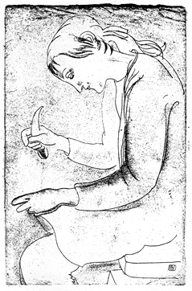

alerts(
MINA LOY: REIMAGINING THE POETIC LINE
It comes as a surprise to learn that Mina Loy thought of herself as a painter who accidentally wandered into poetry. Although, briefly, she became famous (or infamous) for her poetry's frank dissection of female psycho-sexual experience, she had already shown paintings in numerous European exhibitions when her first piece of writing (a long poem in the form of a manifesto called "Aphorisms on Futurism") appeared in Camera Work in 1914. Her poetry is just as striking today, in part because of the strong visual sense that animates her daring rejection of formal and thematic convention.
Until 1913 (when she encountered the provocative aesthetic activism of Marinetti and the Italian Futurists), Mina Loy could have been described as a minor Post-Impressionist painter, known chiefly for the elegance of her draughtsmanship and the delicacy of her water-colors. It is worth noting that the other important influence in these crucial years was her reading of Gertrude Stein's experimental prose. Recalling its impact years later, Mina Loy wrote that her friend had "dismantled the brute matter of style," as if Stein had taken apart her artistic materials the better to reassemble them.
By the time that her poetry began to appear in New York avant-garde magazines, Loy was already rethinking the données of visual representation and the "belle matière" of art (her phrase). Specifically, she looked to the blank page as an alternate space suitable for the examination of complex states of consciousness. The pencil line that she had learned to control with such delicate strength could be reimagined in the poetic line, carving its way sinuously through the formal arrangements of the poem. Similarly, the white spaces around and between words could join in the play of speech and silence, of shape and its shadow. Poetry provided her with a way to explore what she called (in "Aphorisms") "the fallowlands of mental spatiality." And it made possible the enactment of a female inwardness that she had hitherto depicted from without, in numerous portraits of female subjects limited by the requirements of figuration and perspective.
 In "Aphorisms on Futurism" Loy speaks to the old self, to the painter lacking the courage to throw over the aesthetic conventions in which she was trained, and to the woman hemmed in by the tight lacing of Victorian propriety:
In "Aphorisms on Futurism" Loy speaks to the old self, to the painter lacking the courage to throw over the aesthetic conventions in which she was trained, and to the woman hemmed in by the tight lacing of Victorian propriety:
BUT the Future is only dark from outside.
Leap into it--and it EXPLODES with Light.
FORGET that you live in houses, that you may live
FOR the smallest people live in the greatest houses.
BUT the smallest person, potentially, is as great as
The self's new freedom in the future, or the limitless space of writing, may be conjured on the page through careful attention to spatial relations. Loy capitalizes initial words for greater emphasis and either runs sentences on one line to stress the final, climactic word or carries them over to give equal prominence to both final and initial positions. Because, like Stein, she omits connectives, the white space between sets of aphorisms takes on metaphorical significance as the newly cleared "mental Spatiality" that her poem would describe.
Few women, however, can forget that they live in houses or transcend the boundaries of their psychic universe. Many of Loy's Italian poems stress the limitations imposed upon a woman's vision, and others betray an uneasiness with the idea of writing as a female seer. These poems transmit little painterly joy, for they rarely admit the rush of color and sensation of an Impressionist aesthetic. Like her fellow Modernists, Loy thinks her way through poetry in search of some essence, some answer. Her verse's extreme condensation and compression provide the metaphors of a psychic quest for new sources of energy, and the poem itself enacts the mind's concentration and release in sudden illumination.
Appropriately, Loy's figure for such visionary writing was her friend Gertrude Stein. About the same time that Loy wrote her portrait in verse, "Gertrude Stein," she made a series of line drawings of women artists (actually weavers), as if the vision of a woman absorbed in the task of revitalizing her craft could be expressed as well in either kind of line, poetic or painterly. In the end, she was far more prolific as a painter than as a poet, for, unlike Stein, she pretended not to take her writing seriously. Yet I think that she could not have been displeased when William Carlos Williams wrote of her
Lunar Baedeker & Time-Tables,
"her metaphors. . . are of the quality of the sunlight, they
-- Carolyn Burke

DRAWING BY MINA LOY
Note: Loy's writing is collected in The Last Lunar Baedeker, ed. Roger L. Conover, The Jargon Society, 1982. See also: Virginia M. Kouidis, Mina Loy, American Modernist Poet, Louisiana State University Press, 1980; and Carolyn Burke, "The New Woman and the New Poetry: Mina Loy," in Coming to Light: American Women Poets in the Twentieth Century, D. Middlebrook and M. Yalom, eds., University of Michigan Press, 1985; and "Without Commas: Gertrude Stein and Mina Loy," Poetics Journal 4 (1984).
Some
Throb to the night
Bait
Spread one with gold
And carry it home
Against your shirt front
To
With the door locked
Against virgins who
Might
FROM "VIRGINS PLUS CURTAINS" BY MINA LOY
go to this issue's table of contents